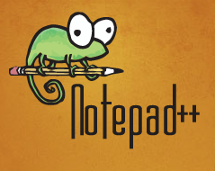
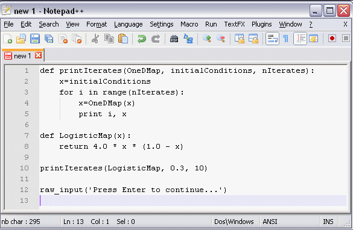

Computer Programming in Python
by Colm Sloan
Table of contents
- Introduction
- Programming language generations
- Software
- Our first program
- Comments
- Variables
- Arithmetic operators
- Handling user input
- Data types and casting
- Relational operators
- If statements
- Boolean operators
- Modulus operator
- While loops
- Development and data validation
- For loops
- Syntax and semantics
- More exercises
Computer programming is like ...
architecture
- work is performed based on a specified design
- late changes in design can have huge implications
- there are tight resource constraints
- finished products are ideally intuitive and easy to use
Computer programming is like ...
gardening
- systems can grow into a tangled mess if unsupervised
- there are many simple and useful rules of thumb
- it's never perfect
Computer programming is like ...
poetry
- lots of creativity constrained by a set of rules
- there are always multiple ways to express the same idea
Computer programming is like ...
technical writing
- it should be as simple as possible
- it should be easy to for the reader to follow
- it should only include the necessary details
What is a program?
A sequence of instructions that a computer can interpret and execute. WordNet, Princeton
What is a programming language?
A programming language designed to facilitate the writing of computer programs. Collins English Dictionary
Programming language generations
First generation
- machine code (binary or hex)
- instructions executed directly by the CPU
- sometimes called "native code"
Programming language generations
First generation strengths
- can be very highly optimized
First generation weaknesses
- difficult to write
- very difficult to read and maintain
- hardware specific
- can require memory mapping
Programming language generations
Second generation
- language based
- compare, jump if less than, subtract, return etc.
- converted to machine code
- various assembly languages
Programming language generations
Second generation strengths
- can be very highly optimized
- the use of language makes it easier to understand
Second generation weaknesses
- quite difficult to write
- quite difficult to read and maintain
- hardware specific
- can require memory mapping
Programming language generations
Third generation
- quite language based
- high level
- functions, named variables, structures
- Python, C, Java
Programming language generations
Third generation strengths
- more structured and readable
- named variables, functions and structures increase productivity
- can apply high level patterns and concepts
- not hardware specific
- do not require memory mapping
Third generation weaknesses
- may not be as efficient as low-level languages
- may require long compilation
Programming language generations
Forth generation
- designed with a particular domain in mind
- sometimes very language based
- sometimes graphical
- functions, named variables, structures
- SQL, LabView, R
Programming language generations
Forth generation strengths
- extremely productive within their domain
Forth generation weaknesses
- practically if not entirely useless beyond their domain
Programming language generation
Fifth generation
- more declarative than imperative
- some constraint based
- solve problems without programmers
- Prolog, Mercury
Programming language generations
Fifth generation strengths
- can easily dynamically infer information
Fifth generation weaknesses
- can take a very long time to set up a problem
- somewhat limited in their applications
System Software
- the files and programs that make up an operating system e.g. Windows, Mac OS X, Linux
- the drivers that interact with the computer hardware
- provides a platform for application software
- examples
- graphical user interfaces components
- file managers
- debuggers, compilers, utitlies
Application Software
- programs and applications built on top of the system software
- examples
- graphics suites
- media players
- accounting software
- office
System and Application Software Interaction
Input and Output
input
- anything that is put into a system or process
- e.g. command line arguments, source code files, DVDs
output
- anything that is produced by a system or process
- e.g. text printed to command prompt and a file being saved
Compiler
- translates source code into machine code that is saved to a file and can be executed at a later time
- can optimize code during compilation
- takes time to compile but fast during execution
- C and C++ programs need to be compiled
Interpreter
- takes source code and executes it on the fly
- no compile time can mean faster development
- usually slower than compiled executables
- Python, Ruby, Lua are interpreted languages
Before we begin
source control
- git
- code versioning software
- bitbucket.com
style guide
- Google Python style guide
- http://google-styleguide.googlecode.com/svn/trunk/pyguide.html
Python
- imperative - stateful
- doesn't require manual memory management
- structured - not just jumps
- case and whitespace sensitive
- battle tested - 1991
- beloved language - has won people's choice awards
- currently 8th most popular language (TIOBE index)
Uses of a code editor
- fast navigation
- code completion
- automatic code generation
- quick refactoring
- integrated debugging
- class visualization
- build automation tools
- integrated source control
- tell you about errors and warn you
- graphical user interface designer
In class editor
 Our first program
Write the following code into your Notepad++ file and save it as e1.py in a newly created folder named after today's date.
print("Hello, World!")
Our first program
- Click on the Windows "start" button and type "cmd" to open a new command console.
- Use the "cd" command to "change directory" to the directory in which e1.py was saved.
- Type "dir" to see the contents of the directory to be sure the file is present.
- Enter "python e1.py" to run the file. (We assume Python is in the class path.)
Our first program
print("Hello, World!")
- the Python script was executed by the Python interpreter
- in this instance, it will execute the only line of code in the input file
- change the sentence and run script again
print("Hello, World!")
- a function for outputting values to the command console or files
- parentheses () immediately after the function name
- input inside the parentheses
print("Hello, World!")
print("Good bye.")
- the file is interpretted from top to bottom, left to right
- there can be multiple lines of code in the executed file
- print and other function can be executed multiple times
What is a variable?
Something able to change or be adapted. Oxford Dictionary
- a symbol associated with a value
- types of variables
- in Python, a data type and symbol associated with a value held in an address in memory
- variables in Python are also called "names"
assignment operator
my_variable = 3
- declare and initize variable
- declare is to make known the existence of something e.g. a variable
- initialize means to give an initial value
- my_variable is declared and initialized to a value of 3
- associates the name "my_variable" with the value 3
- association made using assignment operator (=)
- we can name variables almost anything we like
Printing a variable
my_variable = 3
print(my_variable)
- pass the variable as input to the print function
- function inputs are called arguments
printing a variable
my_variable = 3
print("The value of my variable is", my_variable)
- the print function can accept many arguments
- arguments are separated by commas
- the variable is appended to the print string
- note that a space is implicitly added before the variable
printing multiple variables
some_variable = 3
some_other_variable = 4
# all on one line
print("Some variable is", some_variable, "and the other is", some_other_variable)
# on separate lines
print("The first variable is", some_variable)
print("and the second variable is", some_other_variable)
- by default, the print function prints a new line
- so we can print everything together or on separate lines
addition operator
some_variable = 3
# calculate the sum
sum = some_variable + 5
# all on one line
print("Sum of", some_variable, "plus 5 is", sum)
- the addition operator allows us to add two values
- the result of the calculation is returned (3+5)
- "sum" has a value of 8
addition operator
some_variable = 3
some_other_variable = 4
# calculate the sum
sum = some_variable + some_other_variable
# all on one line
print("Sum of", some_variable, "plus", some_other_variable, "is", sum)
- we can add two variables together too
subtraction operator
some_variable = 3
some_other_variable = 4
# calculate the sum
sum = some_variable - some_other_variable
# all on one line
print("Sum of", some_variable, "minus", some_other_variable, "is", sum)
- subtraction works the same way
addition and subtraction exercise
Write a program that gives an integer value to a variable, e.g. 10, and prints it out. Then create a new variable by adding 2 to your previously created variable. Print out that variable too. Finally, subtract 5 from your second variable and print out the final variable value. Save as arithmetic.py.
addition and subtraction exercise solution
x = 10
print(x)
y = x + 2
print(y)
z = y - 5
print(z)
multiplication and division
x = 3 * 4 # multiplication
y = x / 2 # division
print("multiplication outcome:", x)
print("division outcome:", y)
- mulpication is performed using an asterisk (*)
- division is performed using a forward slash (/)
user input
user_input = input("Enter anything and press enter: ")
print("The user inputted", user_input)
- we can take user input from the console
- input is a function, like print
- the argument passed to the function will be displayed to the user
- the value entered by the user is assigned to the variable (user_input_var)
user input
x = input("Enter an integer: ")
y = x * 10
print("input * 10 is", y)
- what will this give us?
cast user input
x = input("Enter an integer: ")
y = int(x)
z = y * 10
print("input * 10 is", z)
- cast an input string as a type by calling a function
- the function name is similar to the data type to which the variable is being cast
- int is a function that casts a variable to an integer
some Python data types
| type | description |
|---|---|
| bool | boolean true or false |
| int | integer (whole number) |
| float | real number (all numbers) |
| string | a string of alpha-numeric characters |
user input
# take input and cast to int on one line
x = int(input("Enter the first number: "))
y = x + 10
print("The sum is", y)
- multiple functions can be called on the same line
- the output of one function is the input of the immediate outer function
user input
x = int(input("Enter the first integer: "))
y = int(input("Enter the second integer: "))
z = x + y
print("The sum of", x, "plus", y, "is", z)
- we can call functions multiple times
cast user input
# take input and cast it to float on one line
x = float(input("Enter a real number: "))
y = x + 8
print("sum is", y)
- float is a function that casts a variable to a floating point (real) number
user input exercise 1
Write a program that adds a user input integer to a user input float and prints the result. Save as input1.py.
input exercise 1 solution
i = int(input("Enter an integer: "))
f = float(input("Enter a real number: "))
print(i, "plus", f, "is", i + f)
user input exercise 2
Write a program that takes a number from the user, multiplies it by 5, divides it by 3 and prints the result. Save as input2.py.
input exercise 2 solution
x = int(input("Enter an integer: "))
y = x * 5
z = y / 3
print(x, "multiplied by 5 and divided by 3 is", z)
booleans
x = True
y = False
print("x is", x)
print("y is", y)
- a boolean can only have a value of True or False
- True and False must start with capital letters
- remember, Python is case sensitive
relational operators
- a relational operator tests whether a particular relationship is true
- e.g. 5 > 3 is True but 5 < 3 is False
- Python has the following relational operators
| symbol | name |
|---|---|
| < | less than |
| > | greater than |
| <= | less than or equal to |
| >= | greater than or equal to |
| == | equal to |
| != | not equal to |
relational operators
x = 2
y = 3
z = x > y
print("z is", z)
- 2 is less than 3 so the output should be "False".
relational operator exercise
Write a program that takes an integer from the user and prints True if the input is less than or equal to 6. The printed result should mention the value of the input variable, e.g. It is True that the number 4 is less than or equal to 6. Save as relational1.py.
relational operator exercise solution
x = float(input("Enter a number: "))
r = x <= 6
print("It is", r, "that", x, "is less than or equal to 6")
if statement
if some_condition == True:
do_something() # fictional function
- if x then y
- if conditions are satisfied then executed effects
- control flow
if statement
x = 2
y = 3
z = x > y
if z == True:
print(x, "is greater than", y)
- what will be printed in above example?
if statement
x = 2
y = 3
z = x > y
if z == True:
print(x, "is greater than", y)
- the if boolean expression followed by a boolean followed by colon
- code identation is important
if statement
x = 2
y = 3
if x > y:
print(x, "is greater than", y)
- this is a simplified version of the previous code
if statement
if True:
print("This will always be executed")
if False:
print("This will never be executed")
- there can be multiple if statements
if statement
x = 2
y = 3
if x > y:
print(x, "is greater than", y)
print(x, "is indeed greater than", y)
print("This is always printed")
- all indented code after if statement depends on if statement
if statement
x = 6
y = 3
if x > y:
print(x, "is greater than", y)
print(x, "is indeed greater than", y)
at_least_twice_as_much = x >= (y * 2)
if at_least_twice_as_much:
print(x, "is at least twice as much as", y)
print("This is always printed")
- any code can be inside if statement
- dependent code maintains idented vertical alignment
- even another if statement (ad infinitum)
if statement exercise
Write a grading program that will output "You got an A" if the tested variable is greater than or equal to 90.
if statement exercise solution
grade = float(input("Enter a grade: "))
if grade >= 90:
print("You got an A")
if .. else
if some_condition == True:
do_something()
else:
do_something_else_instead()
- must be part of an if statement
- will be executed when the if statement condition is not satisfied
if .. else
x = 2
y = 3
if x > y:
print(x, "is greater than", y)
else:
print(x, "is not greater than", y)
- same indentation rules as if
- no boolean required
- else followed by colon
if .. else
x = 2
y = 3
if x > y:
print(x, "is greater than", y)
else:
print(x, "is not greater than", y)
- the else clause will be executed because the if condition is not satisfied
if .. else statement exercise
Write a grading program that will output "You passed" if the user input a value greater than or equal to 50. Otherwise, output "You failed".
if .. else statement exercise solution
grade = int(input("Enter grade: "))
if grade >= 50:
print("You passed")
else:
print("You failed")
else if (elif)
if some_condition == True:
do_something()
elif some_other_condition1 == True:
do_some_other_thing1()
elif some_other_condition2 == True:
do_some_other_thing2()
else:
do_something_else_instead()
- elif is short for else if
- must be part of an if statement
- there can be any number of elif clauses
- like a set of if statements where only the top-most satisfied one is executed
- used to keep code tidy
- else isn't required after an elif
else if (elif)
x = 2
y = 3
if x > y:
print(x, "is greater than", y)
elif x < y:
print(x, "is less than", y)
else:
print(x, "is equal to", y)
- elif is short for else if
- must be part of an if statement
- like a set of if statements where only the top-most satisfied one is executed
- used to keep code tidy
if statement exercise
Write a grading program that will output an appropriate grade for each of the following situations:
| output | condition |
|---|---|
| You got an A | grade greater than or equal to 90 |
| You got an B | grade from 80 to 89 |
| You got an C | grade from 70 to 79 |
| You got an D | grade from 60 to 69 |
| You got an F | grade less than 60 |
Don't use boolean operators (covered later)
else if (elif)
grade = int(input("Enter grade: "))
if grade >= 90:
print("You got an A")
elif grade >= 80:
print("You got an B")
elif grade >= 70:
print("You got an C")
elif grade >= 60:
print("You got an D")
else:
print("You got an F")
boolean operators
- operations with boolean inputs that give a boolean output
- e.g. True and False, False or True, not True
- Python has the following boolean operators
| name | operation | description |
|---|---|---|
| not | negation | flip the input |
| and | conjunction | are both inputs True? |
| or | disjunction | is at least one input True? |
not boolean operator
x = 2
y = 3
p = x > y
if p:
print(x, "is greater than", y)
if not p:
print(x, "is not greater than", y)
- if the input is true, the output is false
- if the input is false, the output is true
| p | not p |
|---|---|
| False | True |
| True | False |
and boolean operator
grade = int(input("Enter grade: "))
if grade >= 50 and grade <= 100:
print("You passed")
elif grade >= 0 and grade < 50:
print("You failed")
else:
print("You entered an invalid grade")
- both inputs must be True to return True
- all other situations return False
| p | q | p and q |
|---|---|---|
| False | False | False |
| False | True | False |
| True | False | False |
| True | True | True |
or boolean operator
heavy_rain = True
icy = False
if heavy_rain and icy:
print("Stay inside")
else:
print("Go out to play")
- at least one input must be True to return True
- returns False if both inputs are False
| p | q | p or q |
|---|---|---|
| False | False | False |
| False | True | True |
| True | False | True |
| True | True | True |
truth table exercise
Create a truth table showing logical possibilities for a set of propositions, p, q, not p, not q, p or q, not p or q, p or not q, not p or not q.
Modulus (mod) operator
The operator that returns the remainder after integer division of its first argument by its second The Free Online Dictionary of Computing
- the remainder from division of the first argument by the second
- sometimes called clock arithmetic
- values wrap around like on a clock
- mod operators is a %
- 25 % 10 == 5
- 8 % 2 == 0
- 23 % 12 == 11
- 53 % 2 == 1
Modulus (mod) operator
Modulus (mod) operator example
x = 12
my_mod = 3
mod_result = x % my_mod
print(x, "mod", my_mod, "is", mod_result)
- what will be the value of mod_result?
Modulus (mod) operator exercise 1
Write a program that asks for an integer from the user and outputs whether or not the given integer is divisible by 5 without having a remainder.
Modulus (mod) operator exercise solution
x = int(input("Enter a number: "))
if x % 5 == 0:
print(x, "is evenly divisible by 5")
else:
print(x, "is not evenly divisible by 5")
Modulus (mod) operator exercise 2
Write a program that asks for an integer from the user and outputs whether or not the given integer is odd or even.
Modulus (mod) operator exercise solution
x = int(input("Enter a number: "))
if x % 2 == 0:
print(x, "is an even number")
else:
print(x, "is an odd number")
Changing a variable value
x = 0
print("x starts at", x)
x = x + 5 # old value plus some value assigned to x
print("x after x = x + 5 is", x)
x += 6 # shorter method
print("x after x += 6 is", x)
x -= 3 # works for other operators
print("x after x -= 3 is", x)
x /= 2
print("x after x /= 2 is", x)
x *= 4
print("x after x *= 4 is", x)
- x on the right hand side of = will hold the current value
- the right side is evaluated first
- the result is assigned to x
- x = x + 2 is the same as x += 2
- prefer the shorter and more readable version
While loop
- an if statement that will keep executing until the boolean condition is no longer satisfied
- useful for executing a code block multiple times in succession
Stages of while loop loop
while guard_condition:
execute_while_guard_is_true()
#some code after the while loop
- guard condition evaluated
- if guard condition is true, goto step 3, otherwise, goto step 5
- execute code inside the while loop
- goto step 2
- execute whatever code comes after loop
Stages of while loop
- initialize values of variables
- place guard on loop
- develop body of loop - do work we want
- progress toward termination
While loop
i = 0 # initialize values of variables
while i < 5: # place guard on loop
print("i is", i ) # develop body of loop
i += 1 # progress toward termination
- same style as if statement
- keyword, boolean expression, colon, identation
- what will be the output?
- beware of infinite loops
While loop exercise 1
Write a program that prints the multiples of 5 from 0 to 100. e.g. 0, 5, 10, 15, ..., 100.
While loop exercise 1 solution
multiple = 0
while multiple <= 100:
print(multiple)
multiple += 5
While loop exercise 2
Write a program that prints the even numbers from 0 to 10.
While loop exercise 2 solution
i = 2
while i <= 10:
print(i)
i += 2
i = 0
while i <= 10:
if i % 2 == 0:
print(i)
i += 1
While loop exercise 3
Write a program that takes exactly 3 numeric inputs from the user and outputs their sum.
While loop exercise 3 solution
num_inputs_taken = 0
sum = 0
while num_inputs_taken < 3:
user_number = float(input("Enter a number: "))
num_inputs_taken += 1
sum += user_number
print("The sum is", sum)
While loop exercise 4
Write a program that keeps taking numbers from the user until the sum of those numbers is greater than 20. Output the final sum.
While loop exercise 4 solution
sum = 0
while sum <= 20:
user_number = float(input("Enter a number: "))
sum += user_number
print("The sum is", sum)
Sentinel value
sentinel = -1
sum = 0
user_input = None # tell interpreter this is empty
while user_input != sentinel:
u = input("Enter a positive number or -1 to quit: ")
user_input = float(u)
sum += user_input
sum += 1 # add back the -1 that added to the sum
print("The sum of the numbers entered is", sum)
- a sentinel is a special value used to guarantee the possible termination of a loop
- it is useful when the number of inputs isn’t known in advance
- not as useful in Python as in older languages
- e.g. keep presenting user with menu until they select quit
- e.g. continue adding numbers until the sentinel value is entered
Sentinel value
sentinel = "exit"
sum = 0
user_input = None # tell interpreter this is empty
while True: # loop forever
u = input("Enter a positive number or 'exit' to exit: ")
if u == sentinel:
break # break out of loop
user_input = float(u)
sum += user_input
print("The sum of the numbers entered is", sum)
- a sentinel being implemented via the break keyword
- executing break exits the immediate loop in which it is executed
While loop exercise 5
Write a program that take numbers from the user until they enter "exit". After this, print the average of the numbers they entered. The formula for calculating the average is: average = sum of inputs / number of inputs
While loop exercise 5 solution
sum = 0
sentinel = "exit"
user_string = None
num_numeric_inputs = 0
while True:
user_string = input("Enter a number: ")
if user_string == sentinel:
break
user_number = float(user_string)
sum += user_number
num_numeric_inputs += 1
average = sum / num_numeric_inputs
print("The average is", average)
While loop exercise 6
The user must guess the secret number of your choosing. Ask the user to input a number from 1 to 10 as their guess. If they guessed incorrectly, tell them they are wrong. If they guessed correctly, tell them they are right and end the loop.
While loop exercise 6 solution
secret_number = 6
guess = int(input("Guess the secret number from 1 to 10: "))
while guess != secret_number:
guess = int(input("Wrong! Guess again: "))
print("You guessed the secret number")
Top-down development
- starts with an overview concept of a system
- concept is continually decomposed in less abstract, more refined concepts
- refinement and decomposition continues the concept no longer needs refinement
- in computer programming, this point is usually the level of a single function
- promotes modular development and helps designer to consider system constraints sooner
Top-down development example
development environment e.g. Notepad++- settings
- plugin system
- bookmark manager
- ...
- user interface
- project explorer
- build output
- ...
- text editor
- syntax highlighter
- ...
Data validation
- simple - check that input is between 1 and 12 when specifying month
- complex - check that an email address contains at least one letter before the @ and at least another before the dot and at least one letter after that
Data validation exercise
Write a program that asks a user for their age until they give a valid age. Inform the user that their input is invalid if input is less than 4 or greater than 120. Otherwise, inform the user they are too young if under 18 and welcome them for any other age.
Data validation exercise solution
while True:
age = int(input("Please enter your age: "))
if age < 4 or age > 120:
print("Ages must be from 4 to 120.")
elif age < 18:
print("Anyone under 18 is too young.")
else:
print("Welcome.")
break
For loop
for temp_variable in some_collection:
do_something()
#some code after the for loop
- temporary variable assigned value of first element in list
- if the element doesn't exist, goto step 3, else goto step 6
- execute code inside for
- loop variable set to next element in list
- goto step 3
- terminate loop
Lists (briefly)
x = [3, "apples", "cats", 4.91, "apples"]
print(x) # [3, 'apples', 'cats', 4.91, 'apples']
- a collection of objects of any type
- can be of any length, including empty
- can contain duplicates
- contained within square brackets
- elements are separated by commas
For loop
some_collection = [3, "apples", "cats", 4.91, "apples"]
for element in some_collection:
print(element)
- for each element in the list, print it
For loop
ages = [13, 24, 12, 8, 31, 34]
for age in ages:
if age < 18:
print(age, "is less than 18")
- only print the numbers in the list that are more than 18
Why use for loops
- for loops are preferred to while loops because
- they make it harder to accidentally create an infinite loop
- many compilers have nice optimisations for them
- for loops are particularly useful for arrays (later)
- use for loops when it is known how many iterations should occur
- use while loops when it isn’t known how many loops will occur or when you intend to create an infinite loop
range function
range(0, 10, 3) # [0, 3, 6, 9]
range(5, 10) # [5, 6, 7, 8, 9] (step of 1 is implicit)
range(3) # [0, 1, 2] (start at 0 is implicit)
range(-10, -100, -30) # [-10, -40, -70]
- returns a list of numbers from start to stop by step
- starts at the first argument, goes up to, but does not include second
- very useful for iteration (repeatedly performing something)
range function
range(0, 10, 3) # [0, 3, 6, 9]
range(5, 10) # [5, 6, 7, 8, 9] (step of 1 is implicit)
range(3) # [0, 1, 2] (start at 0 is implicit)
range(-10, -100, -30) # [-10, -40, -70]
- first argument is always the first element in the list - mandatory
- second argument is never included in the list - optional
- third argument is the step size - optional
For loop
for i in range(0, 10, 2):
print(i)
- print every number from 0 to 8 in increments of 2
- i is traditionally the iterable variable name
For loop
for i in range(10, 0, -1):
print(i)
- print every number from 10 to 1 in increments of -1
For loop exercise 1
Write a program that uses a for loop to output the sum of the numbers from 1 to 10.
For loop exercise 1 solution
sum = 0
for i in range(1, 11, 1):
sum += i
print("Sum is", sum)
For loop exercise 2
Use a for loop to take five integers from a user. Display the running and final sum of these integers.
For loop exercise 2 solution
sum = 0
for i in range(1, 6, 1):
sum += i
print("Running sum is", sum)
print("Final sum is", sum)
For loop exercise 3
Take an integer from a user. Using a for loop, tell the user which numbers from 2 to 10 that the integer can evenly be divided by.
For loop exercise 3 solution
u = int(input("Enter an integer: "))
for i in range(2, 11, 1):
if (u % i == 0):
print(u, "can be evenly divided by", i)
For loop exercise 4
Write a program that asks the user to input the starting value, the ending value and the step value of a range. Output the average of the values in that user specified range.
For loop exercise 4 solution
sum = 0
num_elements = 0
start = int(input("Enter a starting value: "))
end = int(input("Enter a ending value: "))
step = int(input("Enter a step size: "))
for i in range(start, end, step):
num_elements += 1
sum += i
print("Average is", sum / num_elements)
Syntax
Syntax is the way symbols may be combined to create well-formed sentences (or programs) in the language. Syntax defines the formal relationships between the constituents in a language [...]. Syntax deals solely with the form and structure of a language without consideration given to their meaning. Kevin Slonnger, Syntax and Semantics of Programming Languages
Syntax
- in English, it is legal for a pronoun to be followed by a verb, e.g. I am
- in English, it is not legal for a pronoun to be followed by an adjective e.g. I big
- in Python it is legal for a variable to be followed by an operator e.g. x =
- in Python it is not legal for the while keyword to be followed by the if keyword e.g. while if
- every programming language has a syntax that must be adhered to for a program made usig the language to run
Semantics
Semantics reveal the meaning of syntactically valid strings in a language. [...] Semantics describe the behaviour that a computer follows when executing a program. Kevin Slonnger, Syntax and Semantics of Programming Languages
Syntax and semantics
# Print numbers from 0 to 9 in Python
for i in range(0, 10, 1):
print(i)
// Print numbers from 0 to 9 in C
for (int i = 0; i < 10; i++) {
printf("%d", i);
}
- both code snippets have the same meaning as they both tell the computer to do the same thing
- the semantics of if, while and for constructs are the same across all programming languages
- each language differs in the interface to the computer through different language syntax
Miscellaneous definitions
- clear screen - when a screen a emptied of much of its content
- reverse video - the effect that causes highlighted text to invert the background and text colour
Comments
# Author: Colm Sloan # Purpose: Print and comment tutorial # Date: 13-09-17 # Lincense: MIT print("Hello, World!") # prints to console print("Good bye.") # prints more